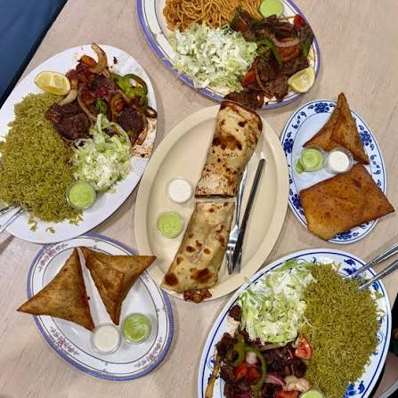

Bariis Iskukaris
Spiced rice served with tender meat and vegetables.
$14.99
Experience the rich flavors of Somalia, prepared with tradition and served with love.

Somali Taste is a family-owned restaurant dedicated to serving authentic Somali dishes made from fresh ingredients and traditional recipes. Every meal is prepared with care to bring the taste of home to every guest.